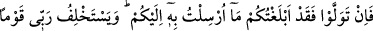

Teâlâ’nın mahlûkatın perçeminden tutması, kudretinin onlara ne kadar tesir ettiğini
göstermek için kullanılan temsîlî bir istiâredir.
İfâdenin mânâsı şöyle olmaktadır: ‘Hiçbir canlı yoktur ki Allah onun sâhibi olmasın,
onu dilediği gibi yönlendirmeye kadir olmasın.’ Bu sözün gayesi Allah’ın yüce şanını,
üstün kudretini, büyük otoritesini ve azametini göstermektir. Kuvveti ve cüssesi ne
kadar büyük olursa olsun güç isteyen her şey O’nun kudretinin yanında küçük kalır.
Onun kahrına ve gücüne boyun eğer. Kendisi hakkında dilediğini yaratması konusunda
O’na âmâdedir. O’nun için imkânsız hiçbir şey yoktur.
“Şüphesiz Rabb’im dosdoğru yoldadır.” Yani O, hükümranlığında adalet ve hakka
göre hareket eder. Hiçbir zâlim gözünden kaçmaz. Kendisine güvenip sarılan hiçbir
kimseyi boşta bırakmaz.
et-Te’vîlâtü’n-Necmiyye’de şöyle denilmiştir: “Hayır ve şer talep ederken, hareket
edip “yürüyen hiçbir canlı yoktur ki O, onun perçeminden tutmuş olmasın.” Kudreti
altında zelil bir şekilde bu canlıları perçemlerinden tutarak hayra ve şerre sürükler.
“Şüphesiz Rabb’im” hayra layık olanları ıslah etmek, şerre layık olanları ise ifsâd
etmek hususunda “dosdoğru yoldadır.”
Burada şöyle bir işaret de vardır: “Şüphesiz Rabb’im dosdoğru yoldadır.” ifadesi,
O’nu O’nunla arayanlara delâlet ediyor ki: O’nu taleb eden, tarikat esaslarına göre
yaşayarak şeriatın dosdoğru yolu üzere taleb etsin. Çünkü O’na hakikat ile ulaşılır.
Yine bu ifade şunu da gösteriyor: “Şüphesiz en son varış Rabb’inedir.” (en-Necm,
53/42) âyetinde olduğu gibi sonunda varılacak olan başkası değil, sadece O’dur.
Nakdü’l-Fusûs’da şöyle zikredilir: Ahadiyyet-i ef‘âl, tesirler ve tesir edenler
konusunda zikredilmiştir ki: Allah’ın yüce zâtı hakîkatte bütün fiillerin kaynağı, tesir
altında bulunanların tamamında müessirdir. Kabiliyetlerine göre her birinin terbiyesi ile
ilgili hükmü kendi cânibine çeker. İşte “…onun perçeminden tutmuş olmasın. Şüphesiz
Rabbim dosdoğru yoldadır.” âyetinin sırrı budur.
Ne ederlerse etsinler“Hepsi bize döneceklerdir.” (el-Enbiyâ, 21/93)
Çünkü başka yere dönecekleri fikri delilik olur
Bunun için şöyle denilmiştir:
Madem ki sağdan soldan giden bütün yollar doğruca O’nadır
Hangi yola gitsen sonu O’na varır
Madem ki her şeyin başlangıcı O’ndandır
Hepsinin sonu da O’na olur